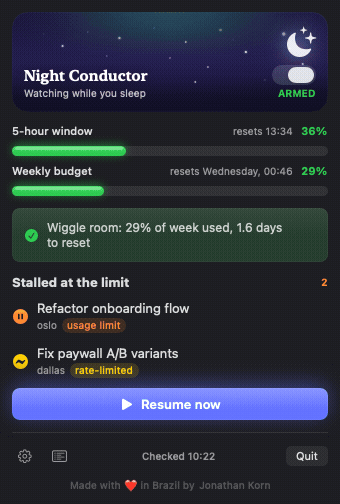

🌙 Night Conductor
Your Conductor sessions hit the Claude usage limit at 11pm. Night Conductor resumes them while you sleep — without blowing your weekly budget.

The header is a living sky that follows the real clock.
What it does
Watches while you sleep
Every few minutes during your sleep window it scans for sessions stalled at the limit.
Budget-aware
Resumes only when there's headroom — 5h + weekly ceilings, plus a pacing guard so it never burns the week too fast.
Morning protection
Never starts a session within 5 hours of when you're back, so your window is fresh when you sit down.
Resumes in Conductor
Presses Conductor's own Retry via Accessibility, so the chat stays in sync — headless fallback if needed.
Install
Requires macOS 15+, Conductor, and Claude Code logged in.
git clone https://github.com/jkkorn/Night-Conductor.git
cd Night-Conductor/NightConductor
./build-app.sh
# drag dist/Night Conductor.app into /ApplicationsScreens